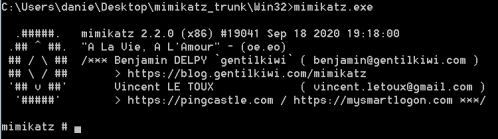
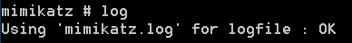

mimikatz (Windows)
Site:
https://github.com/gentilkiwi/mimikatz/wikiDownload
Binaries for Windows:
https://github.com/gentilkiwi/mimikatz/releases/tag/2.2.0-20200918-fixDepending
on the Windows machine you are using (32-bit or 64-bit), run Mimikatz accordingly.
Execute mimikatz as Administrator:
• we have to run cmd as Administrator and then run mimikatz
• run directly mimikatz from GUI as
Administrator
Typically,
instructions of are in the following format:
mimikatz# Modulename::commandName arguments
Before start use Mimikatz we have to do two things:
• elevate privilege to have debug
rights
mimikatz# privilege::debug
• start the logging process,
all Input/output communication would be stored in it for future reference in Mimikatz.log
(..\mimikatz_trunk\Win32\Mimikatz.log)
